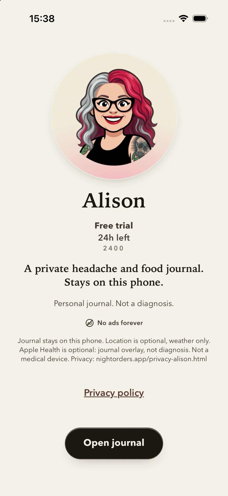
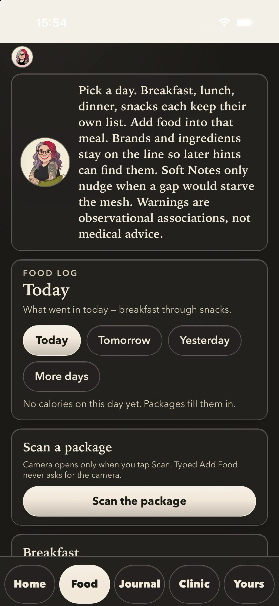
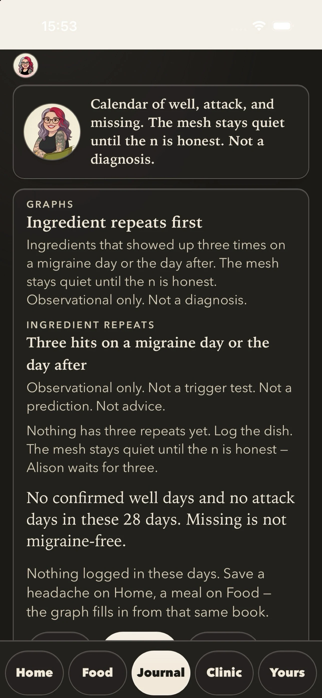
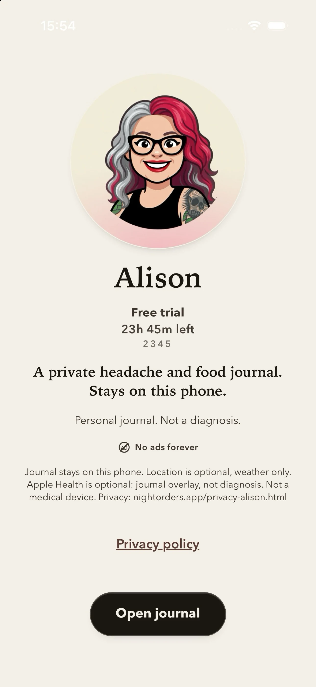

Alison
The record stays with you.
On-device headache journal. Ingredients and symptoms stay with you.
Alison is a personal headache journal on your phone. Log what you eat and how you feel. The journal stays on this device.
Not a medical device. Not a diagnosis. Not a forecast.
Keep
Journal stays readable without Keep. Keep is a 30-day free trial, then $0.99/month through Apple for new Start, Food, and Health pull. When the trial or Keep ends, those services end. Restore on the Keep screen. Cancel in Apple Subscriptions.
No account. No ads.
On this phone
- Start and stop when a headache begins and ends
- Log food and ingredients
- Read the journal you already wrote
- Optional Apple Health and Watch overlays — deny still works




